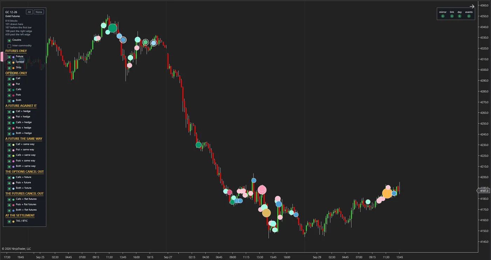
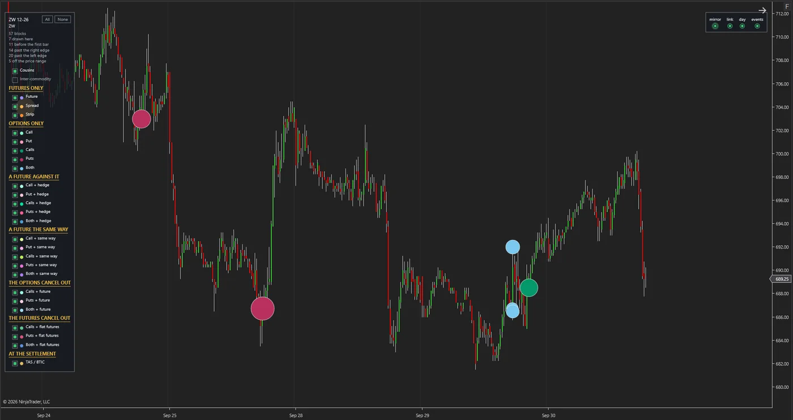
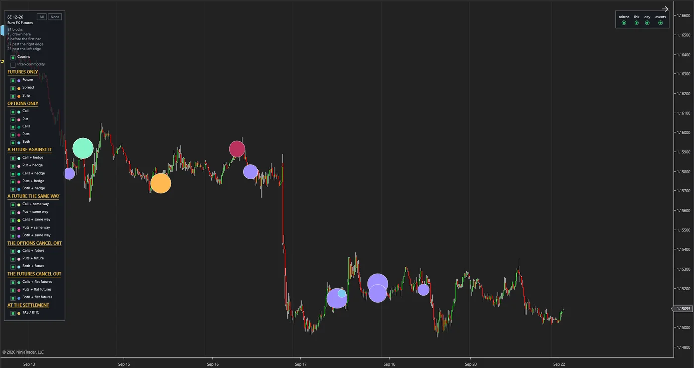

Introduction
The largest trades in the futures market do not happen on the screen. Two large institutions agree on price and size away from the order book, and the market learns of it only a few minutes later, in a short notice. These are called block trades. They leave no trace in the bars and volume a trader sees on the chart, and few people ask what this big money is doing and how the market behaves afterwards.
We decided to understand how these trades behave, and to do that we first became the supplier of their data ourselves.
The BlockTrade project has a data service that is up and running. Our server receives and processes the block trades of every Chicago exchange product without pause and delivers them to the trader's chart. Each block arrives a median of 36 seconds after the exchange's notice, and its history builds up day by day. The destination is trading and investment algorithms built on the behavioural analysis of these same blocks.
Inside the display tool
These are real screens from the project's display tool, not mock-ups. Each circle is one block trade placed on the 15-minute chart of its own asset, and its colour shows the shape of the trade. Click the image to enlarge it.



Gold futures: 816 recorded blocks, 101 of them drawn in this span. The legend beside the chart lists the shapes in groups: futures only, options only, and combinations of the two.
Wheat futures: 57 recorded blocks, 7 of them drawn in this span.
Euro FX futures: 81 recorded blocks, 15 of them drawn in this span.
Approach
First we make the data our own, then we come to know the behaviour, and finally we build algorithms on that knowledge.
-
From the market to our own data
Our dedicated server receives the exchange's notices throughout the trading day, records them exactly as they are, and delivers them to consumers through a dedicated gateway. At this stage we are the supplier of the data, not its customer. This stage is built and working.
-
From data to behavioural analysis
Each block gets a fixed identity, falls into one of 24 defined shapes and is tied to its own asset. Every correction, withdrawal and return of a trade is recorded too, with its exact time. On that basis we measure in what situation each shape of block appears and what the market does afterwards.
-
From behavioural analysis to the algorithm
Findings that hold up when tested on the history will be turned into trading and investment rules. As in all our projects, they are tested in a simulator and at real cost, not on paper. Those algorithms will be fed from the same gateway that feeds the chart.
What stands out
-
The aim is to understand behaviour, not to display data.
Seeing a block on the chart does not make a decision by itself. What we are after is the repeating pattern: which shape of large trade, in which situation, comes with what consequence. The display tool is the first output of this path, not its end.
-
We supply the data; we are not its customer.
Behavioural analysis needs data that is complete, on time and in our own hands. We built and run the chain ourselves, from receipt to delivery. The quality and timing of what reaches the analysis and the algorithm are under our control.
-
We have the market's behaviour, not just the end-of-day list.
The end-of-day list does not say what was corrected, withdrawn, or went and came back in the middle of the day. Our service keeps all of that, and those details are the raw material of behavioural analysis. This history grows every day and cannot be recorded again later.
-
A common language for large trades.
Block trades range from a single contract to multi-leg option combinations. We have sorted them into 24 clearly defined shapes, and that classification has been tested on all the recorded data. Without this language, comparing how blocks behave is not possible.
-
Analysis that is not built on a hidden guess.
A block trade has its buyer and seller together, and no direction is announced for it. Our service states the type of trade and does not invent a direction; wherever it cannot recognise a block, it says exactly that. Any directional reading in our analysis will come separately, under the name "evidence".
-
Infrastructure ready for several consumers.
Several independent machines are fed from one feed, each with its own access. Every night the data goes to a store outside the server and the two copies are checked against each other. Adding an algorithm as a new consumer needs no new infrastructure work.
The road ahead
-
Done
The receiving server, the processing and classification layer, the delivery gateway, the backup and the display tool are built and tested.
-
Done
The rules for recognising behaviour have been completed by watching the market live, and the history builds up day by day.
-
Now
The behavioural analysis of the blocks and the testing of trading hypotheses on this same history.
-
Final step
The final step is trading and investment algorithms that use the trail of big money in their decisions.
Technology
The receiving layer, the processing and the delivery gateway are written in Python on a dedicated Linux server, and the display tool in C#. The service runs without pause and records its own health every ten minutes. Every change goes through the automated tests, and every night the backup is checked against the original.